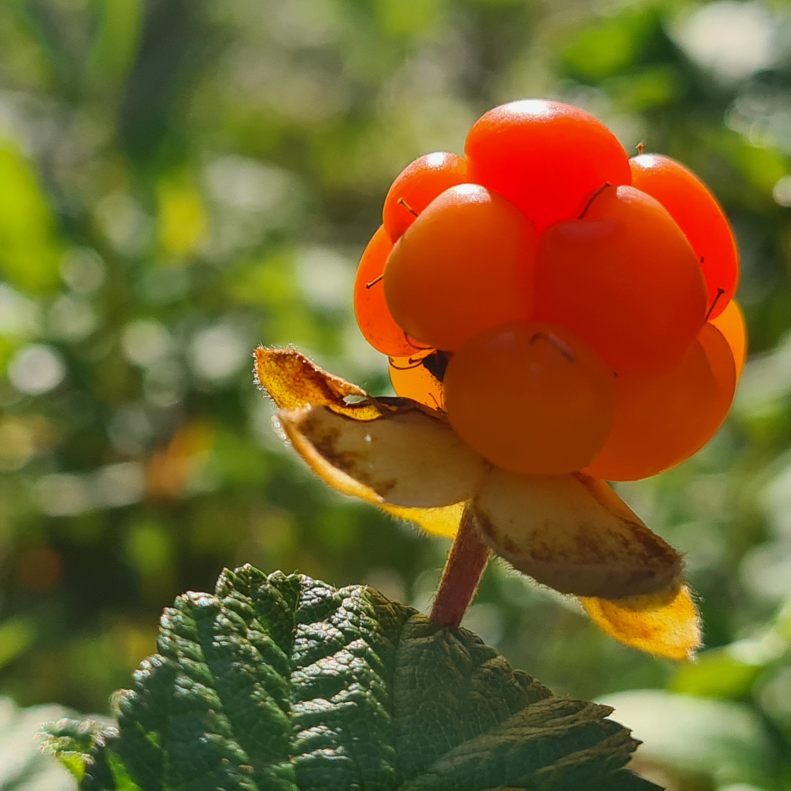
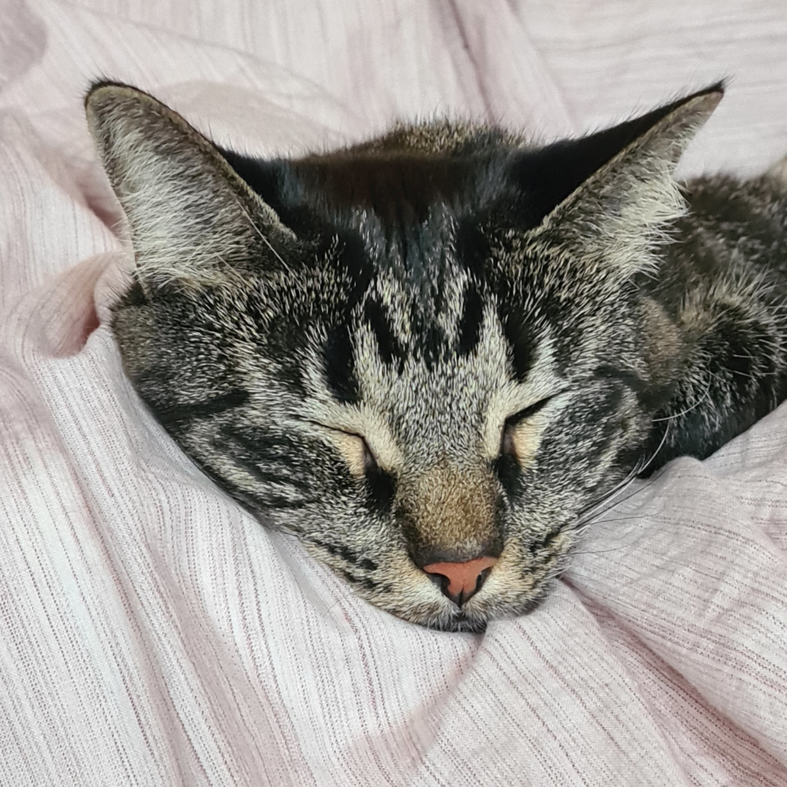

What am I? I am the whisper of a shadow on a moonlit puddle, the hum of a star that forgot how to twinkle. I'm the fourth corner of a triangle, the taste of blue, and the song a pebble sings as it skips across a lake. I'm the dance of invisible fish in an ocean of air, the echo of a door that was never opened, and the scent of laughter on a windy hill.
SearchYou'll find me in the heart of the forest, where the air smells of pine and the leaves whisper secrets to the wind. I am the one who wanders through the underbrush, stopping to pick the ripest berries, their sweetness blending with the earthy scent of the woods. It's here, among the towering trees and hidden paths, where I feel most at home. So, if you're ever lost in the woods, look for the patches of ripe fruit and follow the quiet laughter of the trees—there I will be, hidden in the stillness.
Sometimes, you'll find me crouched down, peering at the world through the lens of a camera, trying to capture an interesting detail that most others might overlook. It could be the delicate curve of a leaf, the shimmer of light through a spider's web, or the unique patterns of a weathered stone. I'm always on the lookout for that perfect moment when the world shows its hidden beauty, framed just right. With camera in hand, I freeze these fleeting details in time, savoring their quiet brilliance.
Finally, you'll find me in the quietest corners, petting a cat that purrs like the world's most soothing melody. In these peaceful moments, time slows down, and every gentle stroke of fur feels like the most important task in the universe. I am the soft hum of contentment, curled up in the warmth of a quiet room with nothing but the company of a furry friend and the soft glow of a lamp. If you ever find yourself seeking solace, look for me in the stillness, where the only sound is the content purring of a cat and the steady rhythm of your own heartbeat.
